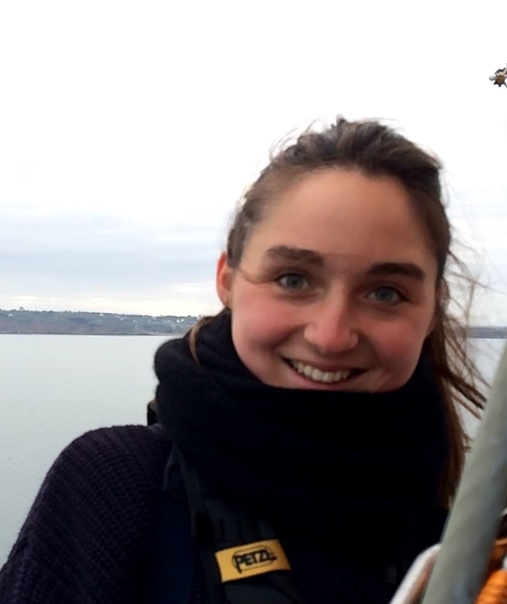

I am a final-year PhD student jointly at Meta AI Research (FAIR) Paris and Inria Saclay. I am advised by Jean-Remi King (FAIR) and Alexandre Gramfort (Inria Saclay).

Research
My research lies at the intersection of Deep Learning, Neuroscience and Natural Language Processing.
Please find my publications on Google Scholar .